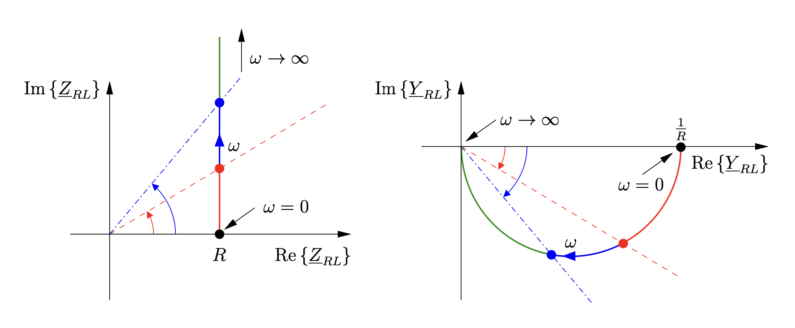
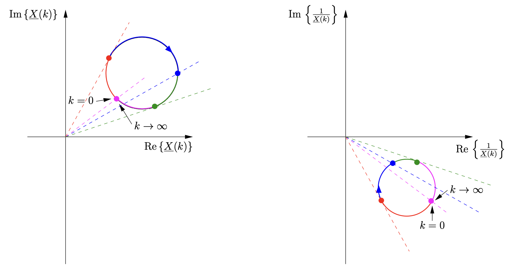
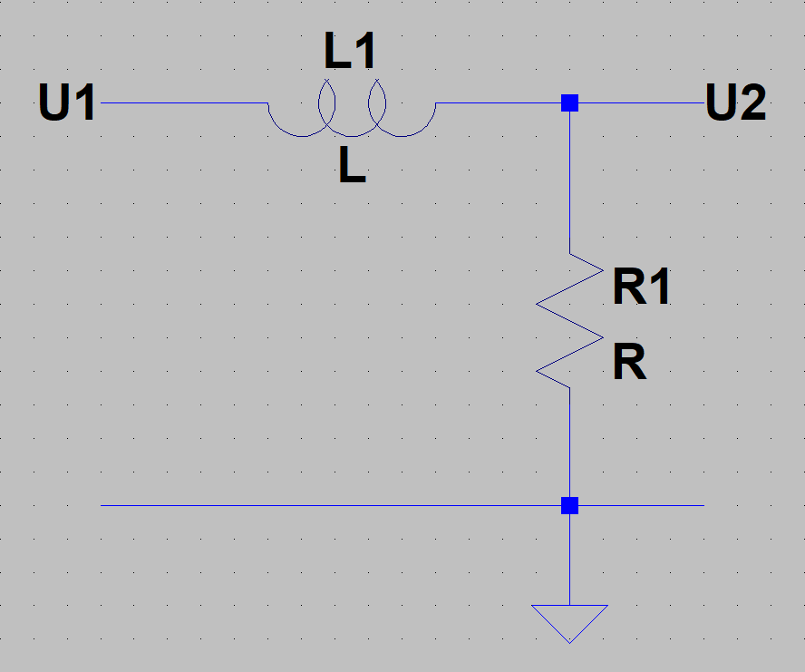
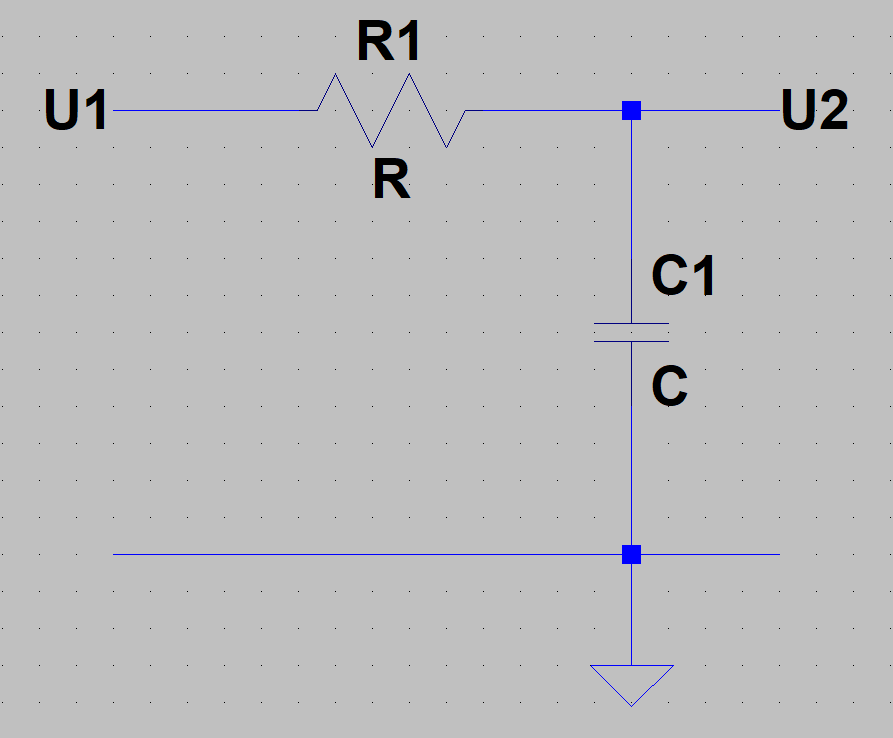
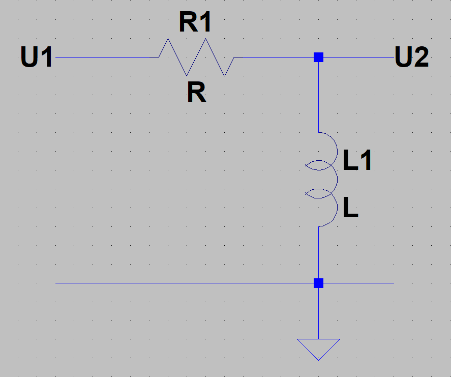
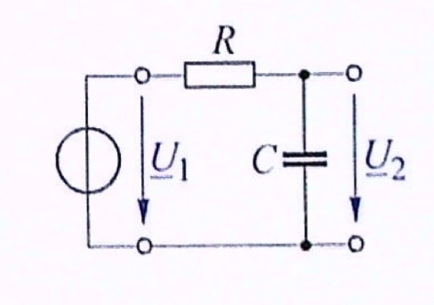
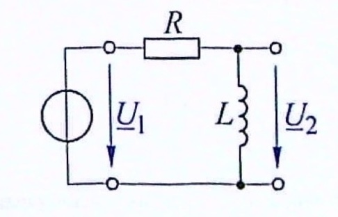
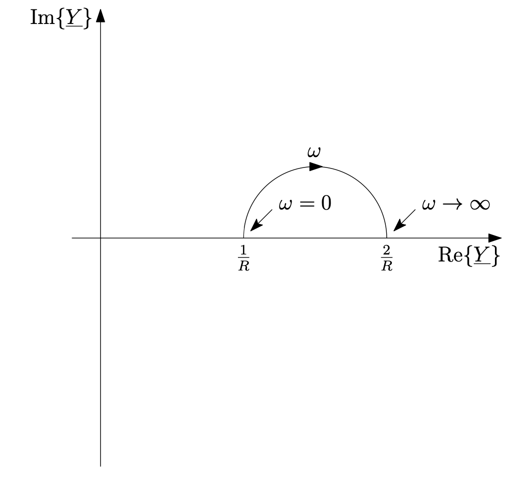

20 Filterschaltungen, Bode-Diagramme und Ortskurven
- Bode-Diagramm
- Ortskurven
- Tief- und Hochpass
20.1 Frequenzgang
In Netzwerken mit den Bauteilen Wirkwiderstand R, Induktivität L und Kapazität C ist das Verhalten bei verschiedenen Frequenzen interessant. Zwei Varianten sich den Frequenzgang eines Netzwerks anzuschauen, ist das Bode-Diagramm und die Ortskurve.
20.1.1 Bode-Diagramm
In dem Bode-Diagramm werden die Amplitude und die Phase des Frequenzganges getrennt voneinander dargestellt. Ein Bode-Diagramm wird von der Übertragungsfunktion gezeichnet.
\[\underline{H}(j\omega) = \frac{\underline{U}_2}{\underline{U}_1}\]
Für den Amplitudengang erhält man:
\[A_v(\omega) = |\underline{H}_v(j\omega)|\]
und für den Phasengang:
\[\varphi(\omega) = \arctan \left( \frac{Im\{\underline{H}(j\omega)\}}{Re\{\underline{H}(j\omega)\}} \right)\]
Das Bode-Diagramm wird im Amplitudengang und Phasengang doppelt logarithmisch dargestellt.
Code
import numpy as np
import matplotlib.pyplot as plt
R = 16e3
C = 10e-9
f = np.arange(10, 100e3, 10)
w = 2 * np.pi * f
b_gangTP = 1/np.sqrt(1 + (w*R*C)**2)
p_gangTP = np.arctan(-w*R*C)
b_gangTP_dB = 20 * np.log10(b_gangTP)
p_gangTP_grad = p_gangTP * 180/np.pi
plt.semilogx(f,b_gangTP_dB)
plt.xlabel("Frequenz in Hz (logarithmisch)")
plt.ylabel("Betragsgang in dB")
plt.grid()
plt.show()Code
import numpy as np
import matplotlib.pyplot as plt
R = 16e3
C = 10e-9
f = np.arange(10, 100e3, 10)
w = 2 * np.pi * f
b_gangTP = 1/np.sqrt(1 + (w*R*C)**2)
p_gangTP = np.arctan(-w*R*C)
b_gangTP_dB = 20 * np.log10(b_gangTP)
p_gangTP_grad = p_gangTP * 180/np.pi
plt.semilogx(f,p_gangTP_grad)
plt.xlabel("Frequenz in Hz (logarithmisch)")
plt.ylabel("Phasengang in °")
plt.grid()
plt.show()20.1.2 dB
Wenn man eine Größe in dB ausdrücken möchte, dann kann man bei Strömen oder Spannungen folgende Formel anwenden.
\[ x_{dB} = 20 \cdot log_{10}(x) \]
Wichtige Größen in dB:
| x | \(20 \cdot log_{10}(x)\) | x | \(20 \cdot log_{10}(x)\) |
|---|---|---|---|
| 1 | 0 dB | 1 | 0 dB |
| \(\sqrt{2}\) | 3 dB | 1/\(\sqrt{2}\) | -3 dB |
| 2 | 6 dB | 1/2 | -6 dB |
| 10 | 20 dB | 1/10 | -20 dB |
| 100 | 40 dB | 1/100 | -40 dB |
| 1000 | 60 dB | 1/1000 | -60 dB |
20.2 Ortskurven
Die Ortskurve stellt die Veränderung einer komplexen Größe, die von einem reellen Parameter abhängt, in der komplexen Ebene dar. Man kann zum Beispiel die Impedanz in Abhängigkeit der Frequenz darstellen.
Am Beispiel einer Reihenschaltung aus Wirkwiderstand und Induktivität
\[\underline{Z} = R + j\omega L\]
erhält man folgende Ortskurve der Impedanz:

Entn. aus (Schenke 2023)
Man kann auch die Ortskurve der Admittanz aufstellen. In diesem Fall lässt sie sich aus der Ortskurve der Impedanz ableiten. Dazu muss nur der Kehrwert der Impedanz an allen Frequenzstellen genommen werden.
\[\underline{Y} = \frac{1}{\underline{Z}}\]
Da die Impedanz eine komplexe Zahl ist, muss der Kehrwert einer komplexen Zahl genommen werden. Zur Erinnerung: Den Kehrwert einer komplexen Zahl erhält man indem man den Kehrwert des Betrages bildet und den Phasenwinkel negiert.

Entn. aus (Schenke 2023)
20.2.1 Inversionsregeln
“Die Inversion einer Geraden durch den Ursprung ergibt eine Gerade durch den Ursprung.”

Entn. aus (Schenke 2023)
“Die Inversion einer allgemeinen Geraden ergibt einen Kreis durch den Ursprung.”

Entn. aus (Schenke 2023)
“Die Inversion eines allgemeinen Kreises ergibt einen allgemeinen Kreis.”

Entn. aus (Schenke 2023)
20.3 Filterschaltungen
Aus zwei der Grundzweipole der Induktivität L und der Kapazität C, kann man in Kombination mit dem Wirkwiderstand R zwei Filterschaltungen bauen.
20.3.1 Tiefpass
Das Kennzeichen des Tiefpasses ist es, dass kleine Frequenzen so gut wie vollständig übertragen werden, während große Frequenzen zunehmend gedämpft werden. Ein Amplitudengang eines Tiefpasses kann zum Beispiel so aussehen:
Code
import numpy as np
import matplotlib.pyplot as plt
R = 16e3
C = 10e-9
f = np.arange(10, 100e3, 10)
w = 2 * np.pi * f
b_gangTP = 1/np.sqrt(1 + (w*R*C)**2)
p_gangTP = np.arctan(-w*R*C)
b_gangTP_dB = 20 * np.log10(b_gangTP)
p_gangTP_grad = p_gangTP * 180/np.pi
plt.semilogx(f,b_gangTP_dB)
plt.xlabel("Frequenz in Hz (logarithmisch)")
plt.ylabel("Betragsgang in dB")
plt.grid()
plt.show()20.3.2 Hochpass
Bei einem Hochpass können hohe Frequenzen ungestört durch die Schaltung gehen, während kleinere Freqeunzen gedämpft werden. Der Amplitudengang eines Tiefpasses könnte zum Beispiel so aussehen:
Code
import numpy as np
import matplotlib.pyplot as plt
R = 16e3
C = 10e-9
L = 1e-0
f = np.arange(10, 100e3, 10)
w = 2 * np.pi * f
b_gangHP = 1/np.sqrt(1 + (R/(w*L))**2)
p_gangHP = np.arctan(-w*R*C)
b_gangHP_dB = 20 * np.log10(b_gangHP)
p_gangHP_grad = p_gangHP * 180/np.pi
plt.semilogx(f,b_gangHP_dB)
plt.xlabel("Frequenz in Hz (logarithmisch)")
plt.ylabel("Betragsgang in dB")
plt.grid()
plt.show()20.4 Übungen
20.4.1 Übung 8.1 (Tief- und Hochpass)
Ordne die folgenden Schaltungen entweder dem Tiefpass oder Hochpass zu. Stelle zusätzlich für jede Schaltung die Übertragungsfunktion auf (keine Brüche im Nenner oder Zähler).




- RC-Hochpass:
\[H(j\omega) = \frac{R}{\frac{1}{j\omega C} + R} = \frac{j\omega RC}{1 + j\omega RC}\]
- RL-Tiefpass:
\[H(j\omega) = \frac{R}{j\omega L + R}\]
- RC-Tiefpass:
\[H(j\omega) = \frac{\frac{1}{j\omega C}}{R + \frac{1}{j\omega C}} = \frac{1}{1 + j\omega RC}\]
- RL-Hochpass:
\[H(j\omega) = \frac{j\omega L}{R + j\omega L}\]
20.4.2 Übung 8.2 (Tiefpass)
(Hagmann Aufgabe 9.1)
Der in dem Bild dargestellte Tiefpass enthält den Wirkwiderstand \(R = 10\,k\Omega\) und einen Kondensator mit der Kapazität \(C = 120\,nF\).
Bei welcher Frequenz \(f\) ist die Ausgangsspannung \(U_2\) um den Faktor 10 kleiner als die Eingangsspannung \(U_1\)?

Entn. aus (Hagmann 2019)
nach der Spannungsteilerregeln:
\[\frac{\underline{U}_2}{\underline{U}_1} = \frac{\frac{1}{j\omega C}}{R + \frac{1}{j\omega C}} = \frac{1}{1 + j\omega RC}\]
Betrag:
\[\frac{U_2}{U_1} = \frac{1}{\sqrt{1 + (\omega RC)^2}}\]
Umstellen und \(U_1/U_2 = 10\) einsetzen:
\[\omega = \frac{\sqrt{(U_1/U_2)^2 - 1}}{RC} = \frac{\sqrt{10^2 -1}}{10\,k\Omega \cdot 120\,nF} = 8,29\,k1/s\]
\[f = \frac{\omega}{2\pi} = \frac{8,29\,k1/s}{2\pi} = 1,32\,kHz\]
20.4.3 Übung 8.3 (Tiefpass Grenzfrequenz)
(Hagmann Aufgabe 9.2)
Der in dem Bild dargestellte Tiefpass enthält den Wirkwiderstand \(R = 1,5\,k\Omega\). Die Kapazität C des vorhandenen Kondensators soll so gewählt werden, dass die Grenzfreqeunz der Schaltung \(f_g = 1,2\,kHz\) wird.
Welchen Wert muss die Kapazität C haben?
yiybmghs ../images/Tutorium/chap8/chap8_aufgabe8.3.jpg :name: fig:TutChap8_aufgabe8.3 {cite}hagmann2019

Entn. aus (Hagmann 2019)
nach der Spannungsteilerregel:
\[\frac{\underline{U}_2}{\underline{U}_1} = \frac{\frac{1}{j\omega C}}{R + \frac{1}{j\omega C}} = \frac{1}{1 + j\omega RC}\]
Betrag:
\[\frac{U_2}{U_1} = \frac{1}{\sqrt{1 + (\omega RC)^2}}\]
Grenzfrequenz \(f_g\) ist bei \(U_2/U_1 = 1/\sqrt{2}\):
\[\omega RC = 1\]
Kapazität:
\[C = \frac{1}{\omega R} = \frac{1}{2\pi \cdot 1,2\,kHz \cdot 1,5\,k\Omega} = 88,4\,nF\]
20.4.4 Übung 8.4 (Hochpass)
(Hagmann Aufgabe 9.8)
Der in dem Bild dargestellte Hochpass enthält eine Spule mit der Induktivität \(L = 85\,mH\). Die Schaltung soll so ausgelegt werden, dass die Grenzfrequenz des Hochpasses \(f_g = 2,5\,kHz\) wird.
Welchen Wert muss der Wirkwiderstand R haben?

Entn. aus (Hagmann 2019)
nach der Spannungsteilerregel:
\[\frac{\underline{U}_2}{\underline{U}_1} = \frac{j\omega L}{R + j\omega L}\]
Betrag:
\[\frac{U_2}{U_1} = \frac{\omega L}{\sqrt{R^2 + (\omega L)^2}}\]
Grenzfrequenz \(f_g\) ist bei \(U_2/U_1 = 1/\sqrt{2}\):
\[R = \omega L\]
Wirkwiderstand:
\[R = \omega L = 2\pi \cdot 2,5\,kHz \cdot 85\,mH = 1,34\,K\Omega\]
20.4.5 Übung 8.6 (Ortskurve)
(Schenke 28.10)
Gegeben ist die folgende Schaltung:

Zeichnen Sie die Ortskurve der Admittanz \(\underline{Y}(\omega)\).
Zeichnen Sie die Ortskurve der Impedanz \(\underline{Z}(\omega)\).

Entn. aus (Schenke 2023)
20.4.6 Übung 8.7 (Ortskurve)
(Schenke 28.16)
Gegeben ist die folgende Schaltung:

- Zeichnen Sie die Ortskurve der Admittanz \(\underline{Y}(\omega)\).

Entn. aus (Schenke 2023)